At the first start, the deck makes its password and opens the setup.
Switch on the Printdeck. The setup opens.
Tap your Wi-Fi network, then type its password.
Wait until the deck is connected, then tap Next.
Write down the address and the password, then tap Finish.
The setup: step 1
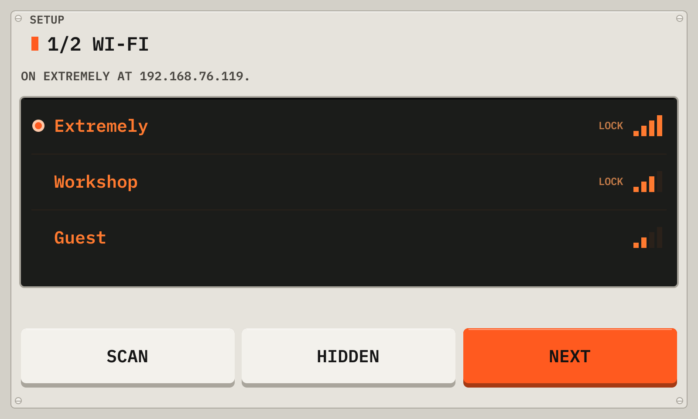
1NetworksThe Wi-Fi networks near the deck, with the signal. A lock shows a network with a password. Tap a network, then type its password.
2ScanLooks for the networks again. The list also scans by itself.
3HiddenFor a network that does not show its name: type the name and the password.
4NextGoes to the summary when the deck is connected.
The setup: step 2
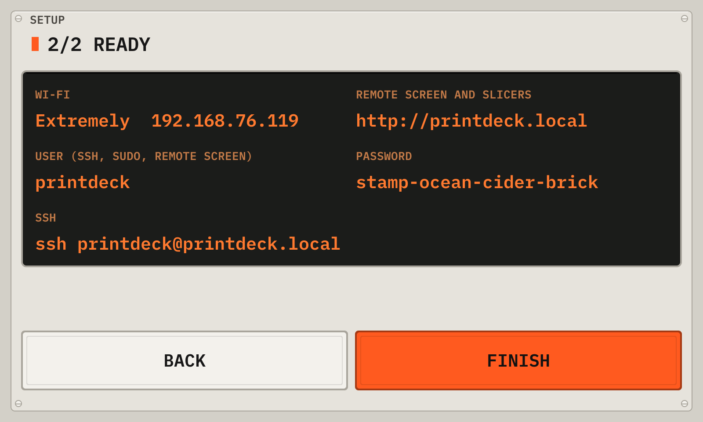
1AddressThe address of the deck on your network. Open it in a browser for the web pages.
2PasswordThe password of the web pages. To see it again, open Machine > Wi-Fi and help.
3FinishCloses the setup. The deck does not open it again.
You can also set the Wi-Fi before the first start: put the disk in a computer, and fill in printdeck.txt on the PRINTDECK partition.
02Choose your printer
A new Printdeck has no printer config. The deck then shows the printer setup.
Connect the printer to the Printdeck with a USB cable, and switch the printer on.
Wait until the deck finds the board. Tap Search again if it does not show.
Tap Choose printer. The printers of the brand of your board are at the top.
Tap your printer, then Use. Klipper restarts with its config.
No printer yet
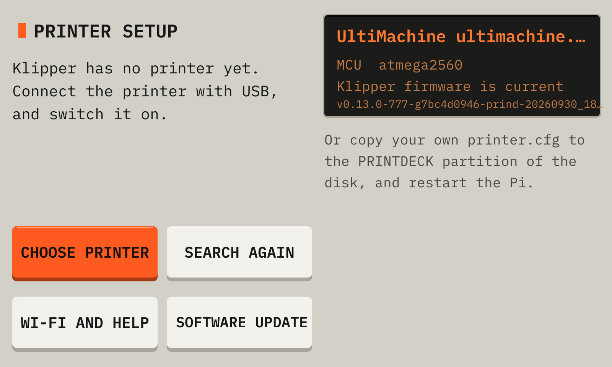
1BoardThe board that the deck found on USB, its MCU, and its Klipper firmware.
2Choose printerOpens the list of Klipper's example configs. See below.
3Search againLooks for the board again, for example after you connect the printer.
4Your own configYou can also copy your own printer.cfg to the PRINTDECK partition, and start the deck again.
5Wi-Fi and helpThe network, the address and the password of the deck.
6Software updateInstalls a new version of Printdeck OS. A new version can fix the problem.
Choose your printer
1ChipThe list shows the printers with the same chip as your board.
2PrinterThe brand, the model, the year and the chip. Tap your printer. The deck writes its config as printer.cfg, with the port of your board, and restarts Klipper. The old printer.cfg stays as printer.cfg.bak.
3Show all printersShows the printers for all chips.
03Install the Klipper firmware
The board of the printer must run the Klipper firmware of this Printdeck. The deck writes it through the USB cable.
Open Maintenance, then tap Firmware. A new board shows Install Klipper firmware on the setup screen.
Tap Write. Do not switch off the printer until the deck shows the result.
Tap OK. Klipper restarts and connects to the board.
The firmware flash
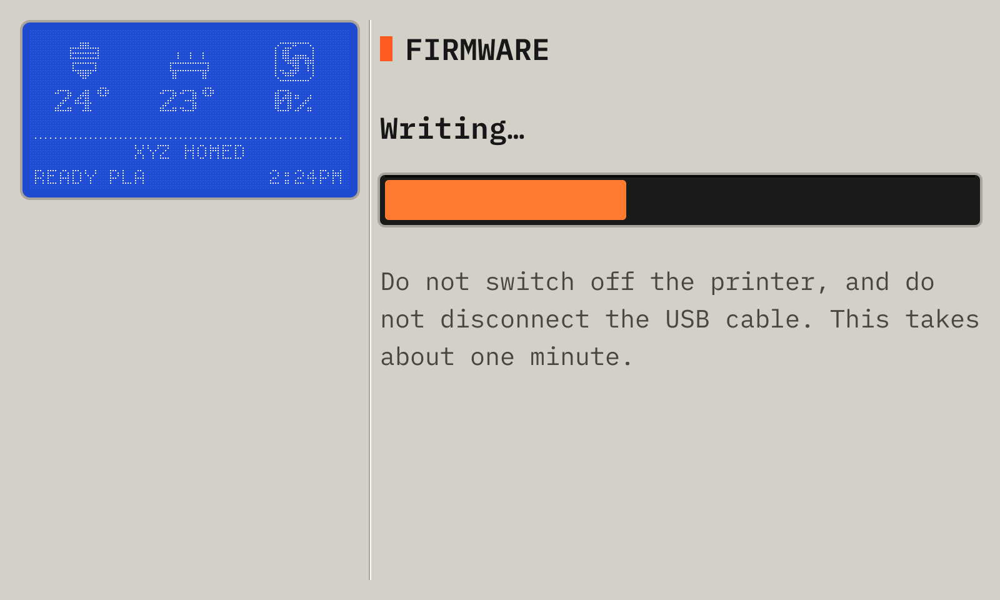
1StepStarting the bootloader, Writing, then Checking.
2ProgressThe part of the firmware that is done.
The deck stops Klipper, resets the board into its bootloader, writes the firmware, and reads it back to check it. Then Klipper starts again. The setup screen and the Klipper error screen also show this key when the board has no Klipper firmware or old firmware. Printdeck can flash boards with an atmega2560 and an STK500v2 bootloader now, for example the RAMBo and RAMPS boards.
04The deck
Printdeck is a touch screen for a 3D printer that runs Klipper. It shows the print, and it controls the printer.
The deck shows the display of the printer at the top of each screen. When the printer does not print, it shows the idle screen. The largest key is the action that you need most: Print a file.
The idle screen
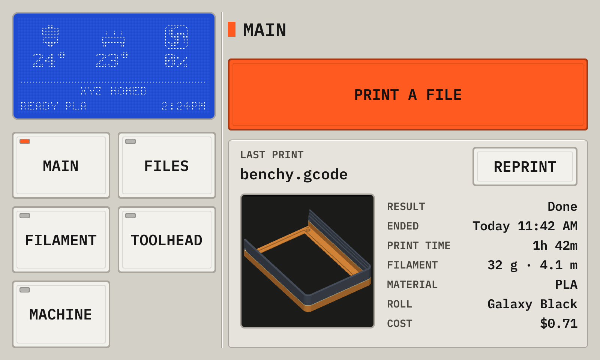
1NozzleThe nozzle now, and its target under it while the heater is on. The icon is filled while the heater is on, and waves rise while it heats. Tap it to set the temperature.
2BedThe same for the bed.
3FanThe part cooling fan. Its blades turn at its speed.
4StatusThe position of the head, the state of the printer with the loaded filament, and the clock. This is the status screen of the display of the printer: the same picture on both screens.
5Print a fileOpens the files. See Files.
6PreheatHeats the nozzle and the bed for the loaded filament.
7Cool downTurns off both heaters.
8Last printThe last print and its result. Reprint starts it again, after a question.
9PagesFilament, Move, Maintenance and Machine. Each page has its own section.
05The display of the printer
When the printer has a display, the deck draws it. The display shows the status screen, the same picture as the idle screen of the deck.
Turn or click the knob to open the menu. The menu has the same pages and keys as the touch screen: the knob moves the cursor, and a click taps the key. The touch screen shows the cursor with an orange ring. The top item goes back: Status on the home menu, Back on a page. A long click also goes back. With no turn for 20 seconds, the display shows the status screen again.
While an action runs, the display shows an animation.
The status screen
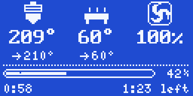
During a print
The home menu: turn the knob to choose
A page: Maintenance
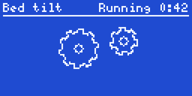
An action runs
06The deck in a browser
Open http://printdeck.local in a browser on the same network, and log in with the password of the deck. The browser shows the same screens as the touch screen, sharp at the pixel density of the phone. Each browser has its own screens, so a phone can show the files while the deck shows the print.
On a phone, use Add to Home Screen: the deck then opens as an app, with no browser bars.
The page http://printdeck.local/system shows the version, the services, the logs and the API key for slicers. It also installs an update: choose the update file, then Install. The deck writes the other system slot and restarts into it. If the new system does not start, the deck goes back to the old one.
07Send a file from the slicer
The deck answers the OctoPrint API that slicers use to send files and to start prints.
In Cura, add the deck with the OctoPrint Connection plugin. The deck asks "Allow Cura to use the Printdeck?". Tap Allow.
In OrcaSlicer or PrusaSlicer, add a printer of the type OctoPrint with the address http://printdeck.local, and the API key of the system page.
08Start a print
The files are the G-code files that the slicer sent, or that you uploaded in the browser. The newest file is at the top.
Each file shows what the slicer wrote into it: the print time, the filament and the layer height. Cura, PrusaSlicer, OrcaSlicer and Bambu Studio write this data. A thumbnail shows when the slicer adds one.
Tap Print a file on the idle screen.
Tap the file. Check the print time, the filament and the temperatures.
Tap Print, then Print again.
The file list
1CountThe number of files.
2PictureThe thumbnail of the slicer, or the shape of a part.
3FileThe name, the print time, the filament and the layer height.
4DateWhen the file arrived.
Drag the list up and down. Tap a file to open it.
A file
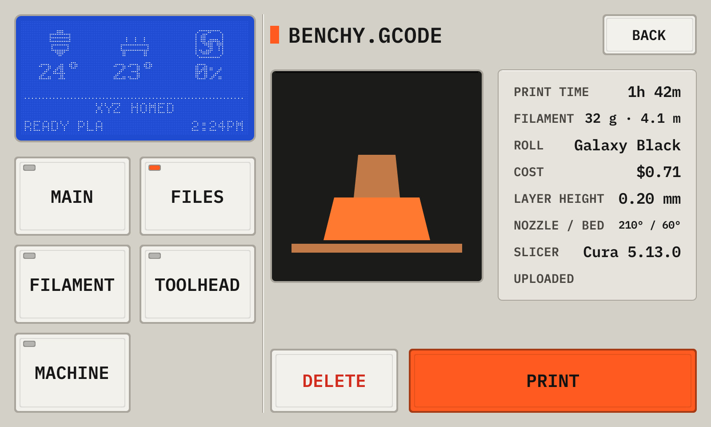
1PictureThe thumbnail of the file.
2Slicer dataThe print time, the filament, the layer height, the temperatures, the slicer and the date.
3PrintStarts the print, after a question.
4DeleteRemoves the file, after a question. The file that prints now cannot be removed.
09Watch the print
During a print, the deck shows the screen of the phase of the print. The deck knows the phase from the printer and from the G-code of the file.
Watch the first layer. Use − and + to set the height of the nozzle while it prints.
Tap Save to keep the Z offset for the next prints.
Use Tune to change the speed, the flow or the fan while the print runs.
When the print is done, wait for the bed to cool, then take the part off.
Preparing
1DisplayThe status screen of the printer display: the nozzle, the bed and the fan, the progress, the time of the print and the time left. Tap the nozzle or the bed to set its temperature.
2StepsThe steps of the start macro of your printer, in its order. The deck follows the commands that the printer runs: the step that runs has a lit LED, and a done step has a dot.
3HelpOpens Wi-Fi and help: the network, the address and the password of the deck.
4Cancel printStops the print, after a question.
The first layer
1DisplayThe status screen of the printer display: the nozzle, the bed and the fan, the progress, the time of the print and the time left. Tap the nozzle or the bed to set its temperature.
2− and +− moves the nozzle closer to the bed, + away from it. A line that is too round and thin needs −. A line that is flat and rough needs +.
3Z offsetThe height of the nozzle above its normal height. Watch the first lines while they print.
4SaveWrites the Z offset into the config of the printer. Save config in Maintenance then writes the file.
5StepHow far one tap moves the nozzle, in mm.
6Pause, CancelPauses the print, or stops it after a question.
7HelpOpens Wi-Fi and help: the network, the address and the password of the deck.
8LayerThe first layer of the model.
Printing
1DisplayThe status screen of the printer display: the nozzle, the bed and the fan, the progress, the time of the print and the time left. Tap the nozzle or the bed to set its temperature.
2PausePauses the print.
3TuneChanges the print while it runs. See Tune.
4CancelStops the print, after a question.
5ModelThe model up to the layer that prints now, with the move now and its speed at the top right.
6Layer sliderDrag it to look at another layer. Live goes back to the layer that prints.
Tune
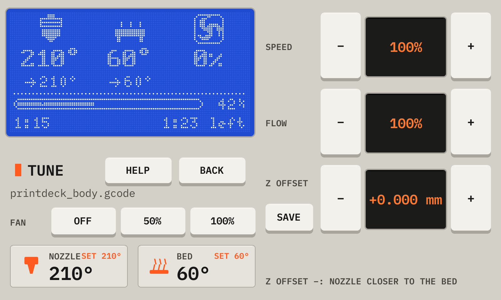
1HelpOpens Wi-Fi and help: the network, the address and the password of the deck.
2SpeedThe speed of the print, in percent of the speed of the slicer.
3FlowThe amount of plastic, in percent.
4Z offsetThe height of the nozzle above its normal height. Save writes it into the config of the printer, as on the first layer screen.
5FanThe part cooling fan.
6TemperaturesTap a card to change its temperature.
Paused
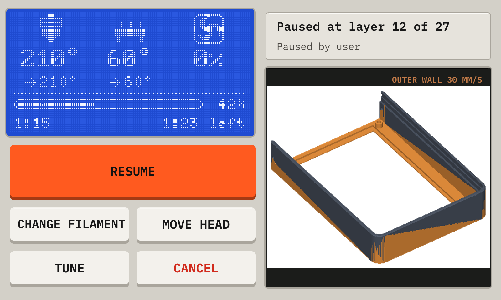
1DisplayThe status screen of the printer display: the nozzle, the bed and the fan, the progress, the time of the print and the time left. Tap the nozzle or the bed to set its temperature.
2WhereThe layer of the pause, and the message of the printer.
3ResumeContinues the print.
4Change filamentThe guided filament change, for a new color. See Change the filament.
5Move headOpens Move, to move the head out of the way.
6TuneChanges the print.
7CancelStops the print, after a question.
Done
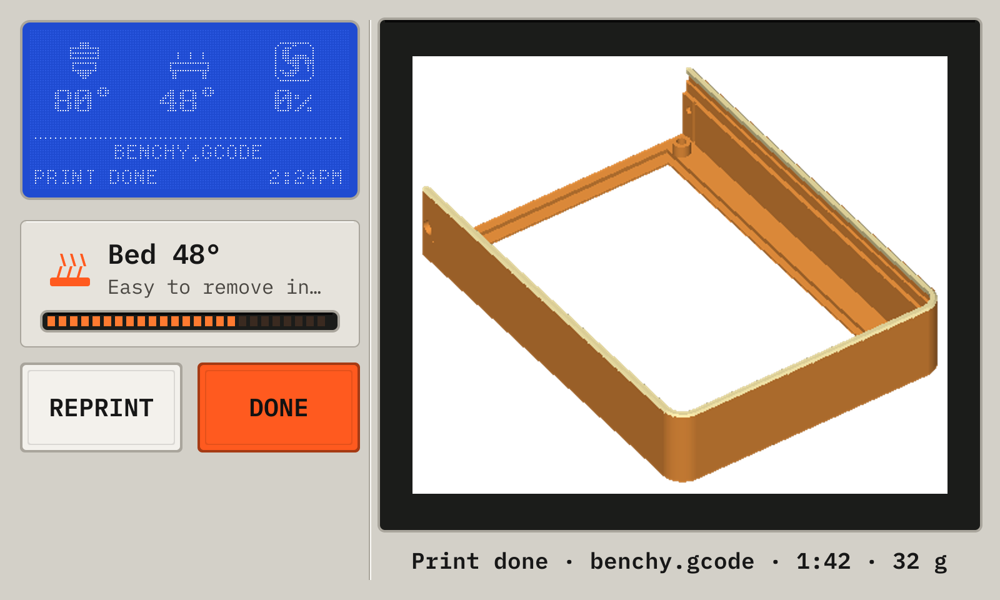
1ModelThe model of the print.
2ResultDone, Cancelled or Failed, the file, the time and the filament of the print.
3BedThe temperature of the bed. The bar is full when the part comes off easily (35°).
4ReprintPrints the file again.
5DoneCloses this screen.
10Change the filament
Set the loaded filament here, so that Preheat uses its temperatures. The guided change heats the nozzle, unloads the old filament and loads the new one.
Open Filament, then tap Change filament.
Tap the new filament. The nozzle heats to its temperature.
Tap Unload, and hold the filament lightly while it comes out.
Push the new filament into the extruder until it stops, then tap Load.
Check that clean plastic of the new color comes out, then tap Done.
The Filament page
1LoadedThe filament that is in the printer, and its temperatures.
5Extrude, RetractPushes or pulls 10 mm. The nozzle must be at 170° or more.
6Heat, Cool downHeats the nozzle for the loaded filament, or turns the heaters off.
The guided change, step 1
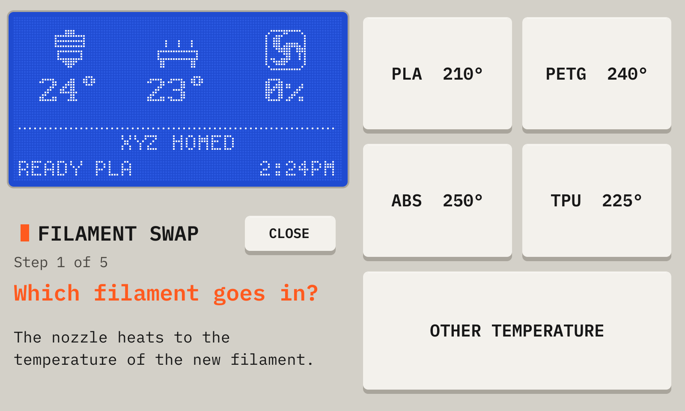
1StepThe step of the change.
2MaterialsThe new filament. The nozzle heats to its temperature, and the deck sets it as the loaded filament.
3Other temperatureA temperature that you type.
4CloseStops the change. During a pause, the nozzle goes back to the temperature of the print.
11Move the head and heat
Open Move, and tap Home all after each start of the printer.
Hold the joystick to move the head. Use Z for the height.
Tap a temperature on the idle screen to set it with the keypad.
The Move page
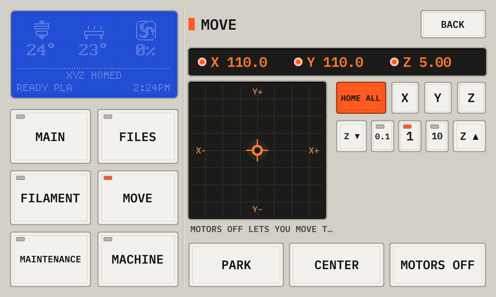
1PositionX, Y and Z of the head. A lit LED shows a homed axis.
2HomeHomes all axes, or one axis. Home after each start of the printer.
3JoystickHold a finger on the pad to move the head in X and Y. The farther from the middle, the faster it moves.
4ZMoves Z up or down by the step: 0.1, 1 or 10 mm.
5Park, Center, Motors offPark moves the head to the back left. Center moves it to the middle of the bed. Motors off lets you move the head by hand. During a pause, Home, Center and Motors off are off, so that the print can continue. Park lifts the nozzle 10 mm before it moves.
The keypad of a temperature
1ValueThe temperature that you type.
2PresetsOff, and the temperatures of the materials.
3KeysThe digits. C clears the value, DEL removes the last digit.
4SetSets the heater. Cancel closes the keypad with no change.
12Level and calibrate
Maintenance lists the calibrations that your printer has. The list comes from the config of the printer.
Open Maintenance.
Tap Bed tilt or Bed mesh to probe the bed. The deck shows the action until it ends.
Tap Probe Z offset for the paper test. Move the nozzle down until a sheet of paper drags a little, then tap Accept.
Tap PID tune after you change a heater or a fan. A PID tune runs for about 10 minutes.
Tap Save config to write the results. Klipper restarts.
The Maintenance page
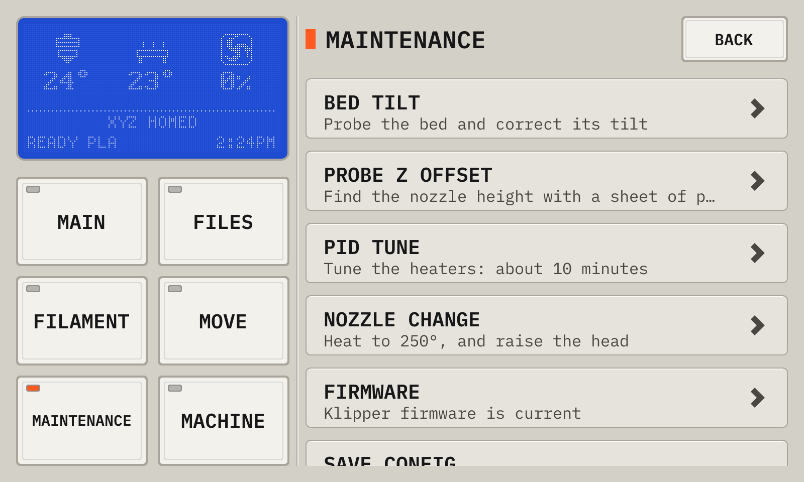
1Bed tiltProbes the bed, and corrects its tilt (BED_TILT_CALIBRATE). A printer with a bed mesh shows Bed mesh.
2Probe Z offsetThe paper test for the height of the nozzle (PROBE_CALIBRATE).
3PID tuneHeats the nozzle to 210° and the bed to 60°, and finds the PID settings of each heater (PID_CALIBRATE). Save config then writes them.
4Nozzle changeHeats the nozzle to 250° and raises the head, to change the nozzle.
5FirmwareWrites the Klipper firmware of this Printdeck to the board of the printer. Orange text shows old firmware. See below.
6Save configWrites the results of the calibrations into printer.cfg. Klipper restarts. Orange text shows unsaved results.
An action runs
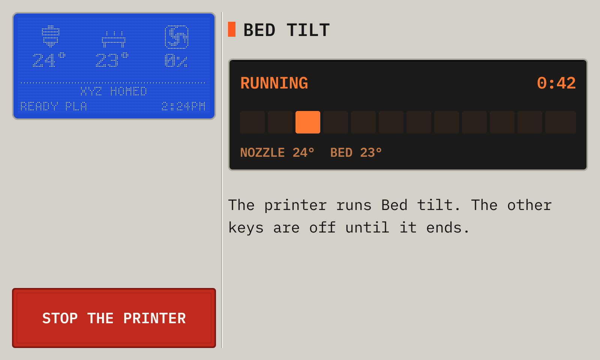
1ActionThe time since the start, a bar that moves while the action runs, and the temperatures.
2Stop the printerStops the printer at once, after one question. Then use Firmware restart.
While an action runs, the deck shows it on the deck and in each browser, and the other keys are off. The display of the printer shows the name of the action and a moving bar. When the action ends, a short message says that it is done. When it fails, the deck shows the error of Klipper until you tap OK.
The paper test
1HeightThe height of the nozzle now.
2StepsMoves the nozzle down (−) or up (+), in mm.
3AcceptTakes the height. Save config then writes it.
4AbortStops the test with no change.
This screen shows by itself while Klipper runs a paper test, also when it started from a macro.
13Look after the printer
Machine has the information of the printer, the history of the prints, the macros and the console.
The Machine page
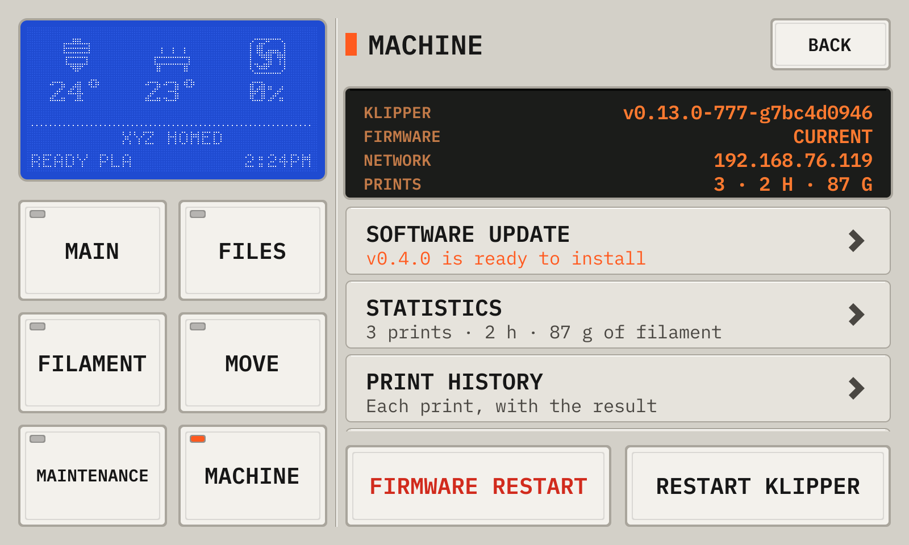
1InformationThe version of Klipper, the state of the firmware of the board, the network address, and the totals.
2Software updateThe version of the deck, and a new version when there is one. See Update the Printdeck.
3StatisticsThe totals of all prints.
4Print historyEach print, with its result. Tap a print to print it again.
5MacrosThe macros of the printer. Tap one to run it.
6ConsoleThe G-code terminal of Klipper. See below.
7ThemeThe colors of the screen: day, night, or auto (night from 20:00 to 7:00). Tap it to change them.
8ClockThe clock of the screens and the display of the printer: 12 hours (2:24 PM) or 24 hours (14:24). Tap it to change it.
9Wi-Fi and helpThe network, the password and the addresses.
10Restart KlipperRestarts the Klipper host, which reads printer.cfg again.
11Firmware restartRestarts the firmware of the board, for example after a stop.
Statistics
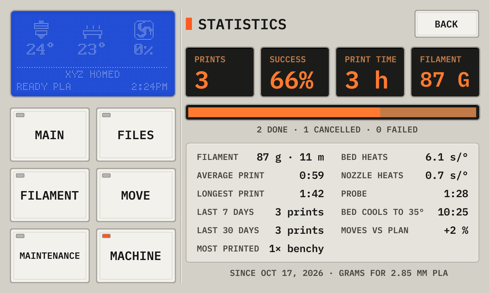
1TotalsThe number of prints, the success rate, the print time and the filament.
2ResultsDone (amber), cancelled and failed (red).
3DetailsThe filament in grams (for 1.75 mm PLA), the average and the longest print, the prints of the last 7 and 30 days, and the file that you print most.
The console
1RepliesYour commands (amber, after >), the replies of Klipper, and errors (red). Drag down to read older lines.
2Type a commandOpens the keyboard. It shows your last command, so you can change it and send it again.
3Quick keysHome (G28), Status (STATUS) and Help (HELP, the list of the commands).
14Update the Printdeck
The deck checks for a new version once a day. Machine then shows Software update in orange.
Each version has a signature. The deck installs only a version with a valid signature of Printdeck. It writes the other system slot and restarts into it. If the new system does not start, the deck goes back to the old one.
Open Machine, then Software update.
Read the notes of the new version, then tap Install. The deck does not install during a print.
Wait while the deck downloads and writes the update. It restarts into the new version.
Software update
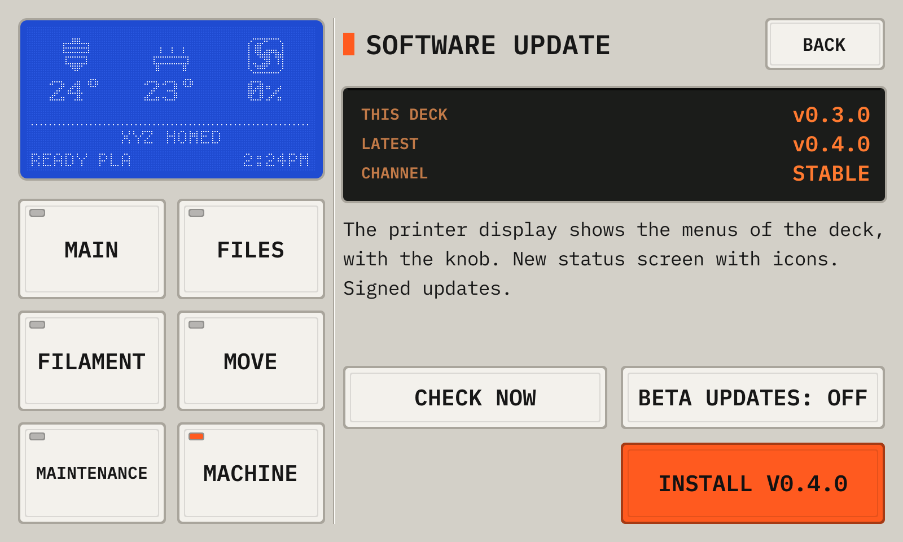
1VersionsThe version of this deck, the newest version, and the channel.
2NotesWhat the new version changes.
3InstallDownloads the new version, checks it, and installs it, after a question. The deck restarts.
4Check nowChecks for a new version now.
5Beta updatesOn: the deck also gets the betas, the versions with new features for tests. Off: only the stable versions.
15When something goes wrong
When Klipper stops with an error, the deck shows all the lines of its message.
Read the message. It often names the setting in printer.cfg.
After a stop or a power cut of the printer, tap Firmware restart.
After a change to printer.cfg, tap Restart Klipper.
A Klipper error
1MessageWhat Klipper reports, with all its lines.
2Restart KlipperRestarts Klipper. It reads printer.cfg again.
3Wi-Fi and helpThe network, the address and the password of the deck.
4Software updateInstalls a new version of Printdeck OS. A new version can fix the problem.
16Settings
The file printdeck.txt on the PRINTDECK partition holds the settings. Put the disk in a computer to change it. The deck reads it at each start, then clears the Wi-Fi password in it.
wifi_ssid, wifi_password, wifi_country
The Wi-Fi network
hostname, timezone
The name on the network, and the time zone
display_rotate
90 or 270 for a display that is mounted tall, 0 or 180 for one that is mounted wide
touch_invert_x, touch_invert_y, touch_swap_xy
1 turns an axis of the touch screen
preheat_tool, preheat_bed
The temperatures of Preheat with no filament set
night_from, night_to
The hours of the night colors
printer.cfg (a file)
A Klipper config. The deck takes it at the next start.